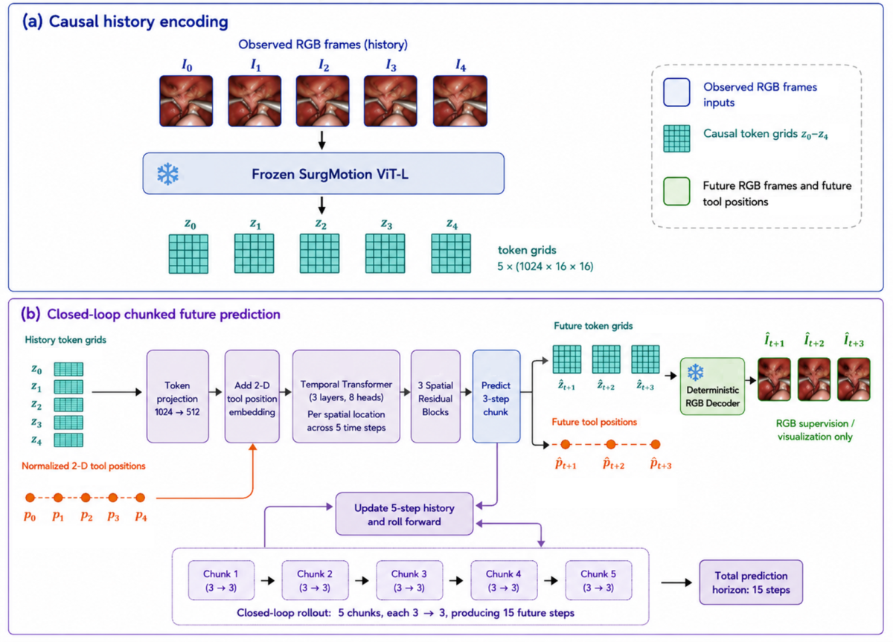

Fig. 2: Overview of the SATS framework. Tokens from multiple patch sizes are projected via separate FFNs. SATS employs Scale-aware Alignment mechanism to promote proximity of mean-...
Figure 3 . Qualitative comparison of 2D Posterior Probability Density Functions (a: best seeds with minimal absolute T e T_{e} error, marked † \boldsymbol{\dagger} in Table 1 ) and...
Figure 2 : Recall@ 𝒫 ∗ \mathcal{P}^{*} across benchmarks and fidelity metrics. For each benchmark, the top row uses unique configurations as the x x -axis, and the bottom row uses ...
Pretraining Reusable Inference Across Views with Synthetic Task Priors
2026-08-19conditional
【P3】原始应用领域是异质视图的可复用推理；可迁移模块是预训练视图效用估计与证据组合过程，而非每个下游任务重新学习固定融合；对应可见光是否提供有效前兆、模态可靠性和抑制无关视觉信息。轻量视图价值头可减少无效分支计算，但若先运行全部编码器仍无端到端节省。风险是合成任务先验与聚变物理不匹配、错误拒绝稀疏关键视图。最小实验：给图像 ROI 和诊断通道训练共享效用评分，在相同预算下比较固定融合、门控融合与可拒绝视图选择的 AUC、ECE、显存和延迟。
作者 / 机构
Jielong Lu, Zhihao Wu, Jiajun Yu, Zhaoliang Chen, Haishuai Wang
【P3】原始应用领域是异质视图的可复用推理；可迁移模块是预训练视图效用估计与证据组合过程，而非每个下游任务重新学习固定融合；对应可见光是否提供有效前兆、模态可靠性和抑制无关视觉信息。轻量视图价值头可减少无效分支计算，但若先运行全部编码器仍无端到端节省。风险是合成任务先验与聚变物理不匹配、错误拒绝稀疏关键视图。最小实验：给图像 ROI 和诊断通道训练共享效用评分，在相同预算下比较固定融合、门控融合与可拒绝视图选择的 AUC、ECE、显存和延迟。
研究背景
由原简报的核心问题、选取理由和相关性整理，不替代原文背景综述。
预训练编码器已能复用多类视图表征，但“哪个视图有用、如何组合”常在每个任务重新学习，容易形成固定融合偏置。
从本日报的选取理由看，【P3】原始应用领域是异质视图的可复用推理；可迁移模块是预训练视图效用估计与证据组合过程，而非每个下游任务重新学习固定融合；对应可见光是否提供有效前兆、模态可靠性和抑制无关视觉信息。轻量视图价值头可减少无效分支计算，但若先运行全部编码器仍无端到端节省。风险是合成任务先验与聚变物理不匹配、错误拒绝稀疏关键视图。最小实验：给图像 ROI 和诊断通道训练共享效用评分，在相同预算下比较固定融合、门控融合与可拒绝视图选择的 AUC、ECE、显存和延迟。
Figure 2 : High-level comparison of the token–selection pipelines. Left: FasterVLM keeps the k k tokens with the highest [CLS] self-attention scores immediately after the vision en...
Figure 1: Overview of StreamSoccer. Incoming clips are encoded as event tokens E t E_{t} and update the active event state. When an event closes, its completed memory M j c M_{j}^{...
Figure 2. Overview of 4DAnyone. Given a source video, an HMR model (GVHMR ( 33 ) ) estimates a 3D skeleton sequence, which is rendered into depth-buffered skeleton videos for v v t...
能否从历史图像与轨迹联合预测未来 15 步视觉状态和动作路径？
对当前主题的关键意义在于：将视觉未来头替换为关键 ROI 重建、轨迹头替换为诊断/风险轨迹，比较单头、双头和一致性损失的 AUC、提前量、图像证据定位、显存和延迟。
方法与关键创新

Figure 1: Overview of the proposed method. (a) Causal history encoding: five observed RGB frames are processed by the frozen SurgMotion ViT-L encoder to obtain causal token grids. ...
![Fig. 2: Overview of the SATS framework. Tokens from multiple patch sizes are projected via separate FFNs. SATS employs Scale-aware Alignment mechanism to promote proximity of mean-pooled representations within each scale, while enforcing separation of max-pooled representations across scales—balancing consistency and scale-specific expressiveness. Hybrid masking strategy , integrating Random Masking and Continuous Masking, is further applied to capture both fine-grained and long-range temporal dependencies.](../assets/figures/237ee147e6f4bf17.png)
![Figure 3 . Qualitative comparison of 2D Posterior Probability Density Functions (a: best seeds with minimal absolute T e T_{e} error, marked † \boldsymbol{\dagger} in Table 1 ) and parameter trace plots across 20 independent seeds (b, c). Method A: yields precise ‘best-case’ estimates, though 95% credible intervals remain widely dispersed due to extreme noise sensitivity. Method B: collapses into a biased and overconfident geometry (almost vanishing error bars) by overfitting localized shot noise. Method C: Our proposed GNLL Surrogate acts as a topological smoother, bypassing noise-induced local minima. Its 95% credible intervals consistently encompass ground-truth values, ensuring the estimated uncertainty aligns with actual estimation errors under extreme noise.](../assets/figures/a98c1b015a02bb9c.png)
![Figure 2 : Recall@ 𝒫 ∗ \mathcal{P}^{*} across benchmarks and fidelity metrics. For each benchmark, the top row uses unique configurations as the x x -axis, and the bottom row uses evaluation budget. Shaded bands show ± 1 \pm 1 standard deviation over 10 seeds. The vertical line indicates the number of unique perturbation combinations (top) and total budget (bottom) required by TestNav to discover all Pareto-optimal configurations 𝒫 ∗ \mathcal{P}^{*} ; endpoint markers ( ■ \blacksquare ) show the highest Recall@ 𝒫 ∗ \mathcal{P}^{*} achieved by each method..](../assets/figures/8ddfc19d5a649c96.png)
![Figure 2 : High-level comparison of the token–selection pipelines. Left: FasterVLM keeps the k k tokens with the highest [CLS] self-attention scores immediately after the vision encoder. Right: our C + H module first applies attention-weighted Huber k k -means to cluster the projected tokens and then retains a single, most important representative from each cluster, with the help of the [CLS] self-attention scores from the pre-projection representations. This reduced set is then enhanced with RRS to denoise each token with its cluster statistics, before being forwarded to the language model.](../assets/figures/d07e6e4f9c9f116f.png)
![Figure 1: Overview of StreamSoccer. Incoming clips are encoded as event tokens E t E_{t} and update the active event state. When an event closes, its completed memory M j c M_{j}^{\mathrm{c}} supports current-event commentary, enters the Recent Event Buffer, and is converted into Historical Event Records. The rule-assisted schedule selects a commentary mode or silence. For generation, selected latent states are projected into Z t Z_{t} , while retrieved records ℛ t \mathcal{R}_{t} are provided as text.](../assets/figures/4bdf11833163f4ea.png)
![Figure 2. Overview of 4DAnyone. Given a source video, an HMR model (GVHMR ( 33 ) ) estimates a 3D skeleton sequence, which is rendered into depth-buffered skeleton videos for v v target views. A 3D-aware skeleton encoder produces residual skeleton tokens that are added to the noisy target latents. The source tokens, RCP reference tokens, and skeleton-conditioned target tokens are concatenated along the view dimension and processed by the DiT with video attention, multiview attention, and text cross-attention. Generated target videos are packed back into the RCP context for subsequent generation rounds, while TCR improves consistency during grouped target-view generation. The final multi-view videos are used to train a 4DGS model with FreeTimeGS ( 39 ) . Pipeline diagram. A source video is converted into skeleton-conditioned target-view tokens. Reference Context Packing supplies compact reference tokens, Target Context Routing exchanges information among target-view groups, and the generated multiview videos are reconstructed as a 4D Gaussian Splatting model.](../assets/figures/c3e5ce582e228c36.png)